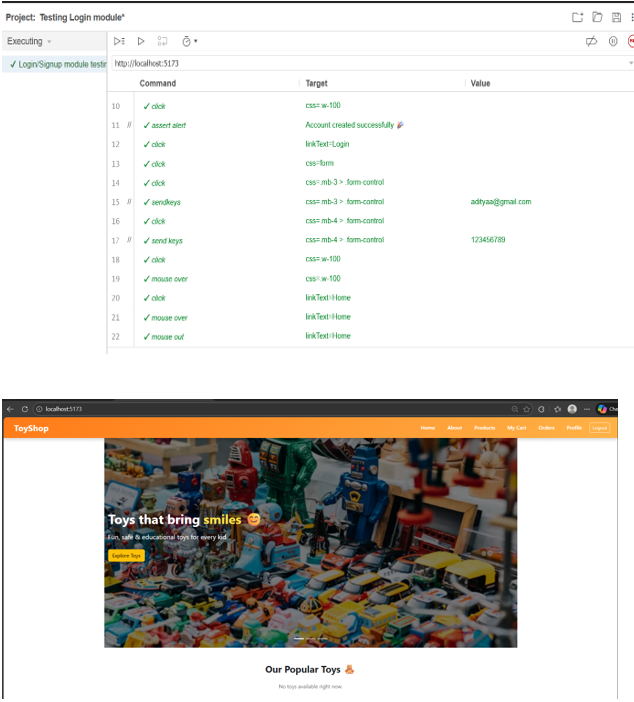
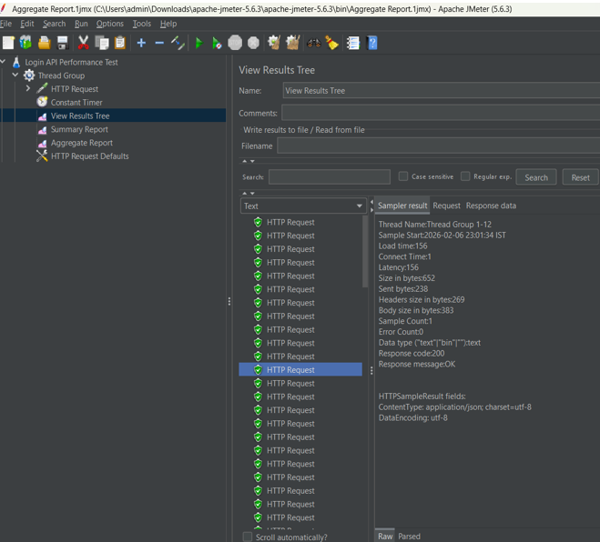
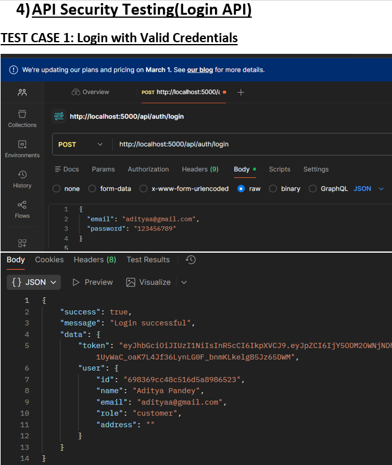

This project demonstrates different software testing techniques including Functional Testing, Performance Testing, API Testing, and Security Testing. The testing was performed to ensure application reliability, performance, and security.
Tools Used: Selenium IDE, Postman, JMeter, OWASP ZAP


